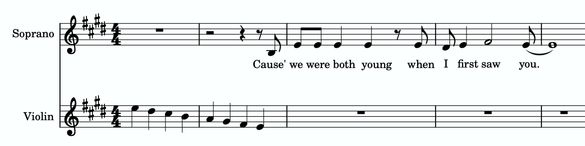
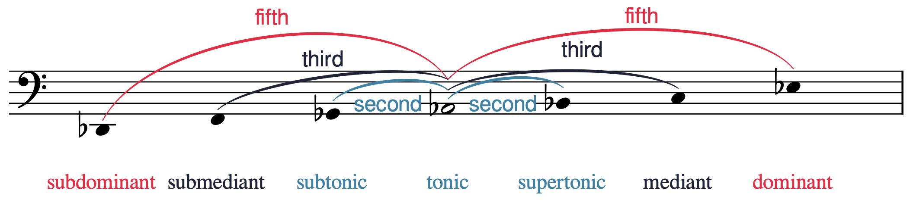
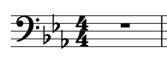
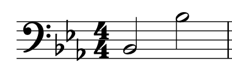
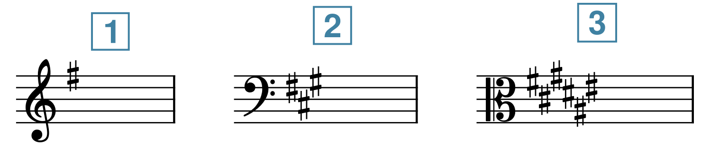
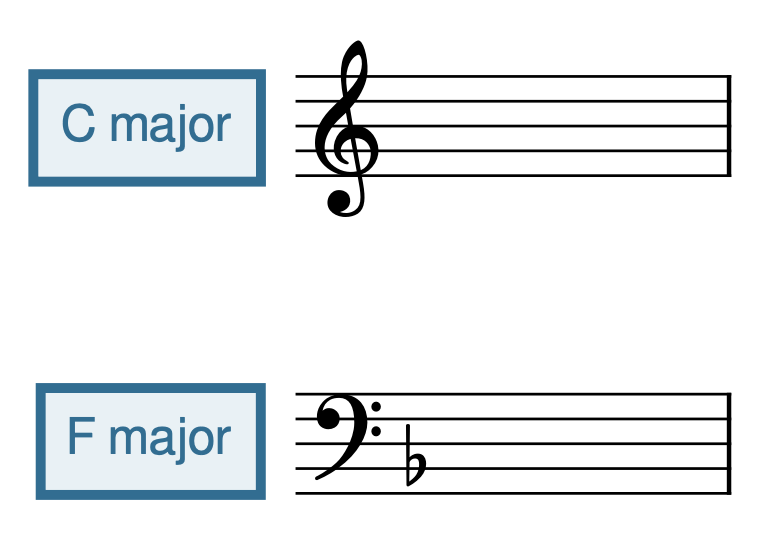
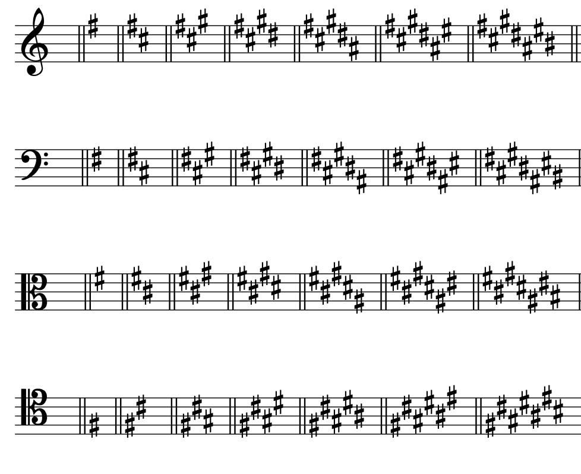
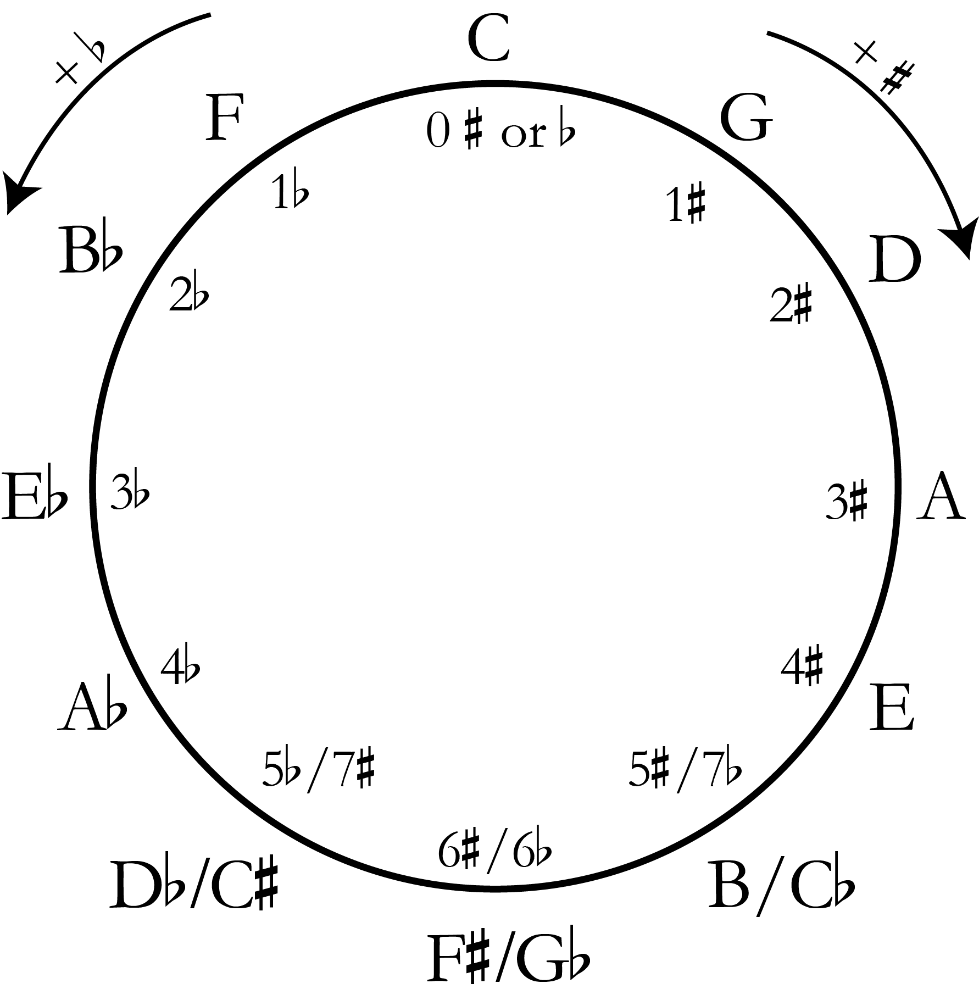

Open Music Theory：繁體中文版
大音階、音階級數與調號
重點整理
- 大音階由半音（H）與全音（W）依序組成，上行排列為 W–W–H–W–W–W–H。
- 大音階依第一個音（也是最後一個音）命名，名稱須包含該音使用的變音記號。
- 音階級數可用來唱讀音高，以加上抑揚符號（ˆ）的阿拉伯數字表示： [latex]\hat1-\hat2-\hat3-\hat4-\hat5-\hat6-\hat7[/latex]。
- 唱名是另一套唱讀音高的音節，用來稱呼大音階中的音：do、re、mi、fa、sol、la、ti。
- 大音階中的各音也有各自的音級名稱：主音、上主音、中音、下屬音、屬音、下中音、導音。
- 調號由升記號或降記號組成，出現在樂曲開頭，位於譜號之後、拍號之前。
- 調號中升記號的順序是 F、C、G、D、A、E、B；降記號的順序則相反，是 B、E、A、D、G、C、F。升記號調號的最後一個升記號所指的音，比主音（音階第一個音）低半音；降記號調號的倒數第二個降記號所指的音就是主音。
- 五度圈方便用來記憶大調調號：依變音記號的數量，將所有大調調號排列成圓圈。
音階是依序排列的半音與全音（可複習〈半音、全音與變音記號〉）。
查看英文原文
Key Takeaways
- A major scale is an ordered collection of half (H) and whole (W) steps with the ascending succession W‑W‑H‑W‑W‑W‑H.
- Major scales are named for their first note (which is also their last note), including any accidental that applies to the note.
- Scale degrees are solmization syllables notated by Arabic numerals with carets above them. The scale degrees are [latex]\hat1-\hat2-\hat3-\hat4-\hat5-\hat6-\hat7[/latex].
- Solfège solmization syllables are another method of naming notes in a major scale. The syllables are do, re, mi, fa, sol, la, and ti.
- Each note of a major scale is also named with scale-degree names: tonic, supertonic, mediant, subdominant, dominant, submediant, and leading tone.
- A key signature, consisting of either sharps or flats, appears at the beginning of a composition, after a clef but before a time signature.
- The order of sharps in key signatures is F, C, G, D, A, E, B, while the order of flats is the opposite: B, E, A, D, G, C, F. In sharp key signatures, the last sharp is a half step below the tonic (the first note of a scale). In flat key signatures, the second-to-last flat is the tonic.
- The circle of fifths is a convenient visual for remembering major key signatures. All of the major key signatures are placed on a circle in order of number of accidentals.
A scale is an ordered collection of half and whole steps (see Half Steps, Whole Steps, and Accidentals to review).
譜例 1。上行大音階。
以下練習可幫助你辨認大音階中的半音與全音：
音階名稱必須包含第一個音與最後一個音所使用的變音記號。譜例 2是 B♭（降 B）大音階，而非 B 大音階；後者會使用另一組音高。請注意，每個大音階的半音與全音排列方式都相同，譜例 1與譜例 2即可看出這點。
譜例 2。降 B 大音階。
大音階在許多不同類型的音樂中都極為常見。泰勒絲的〈Love Story〉（2008）便有一例。譜例 3節錄這首歌的結尾：

- Soprano：女高音；
- Violin：小提琴。
譜例 4。泰勒絲〈Love Story〉；請從 3:42 開始聆聽。
以下練習可幫助你辨識大音階：
查看英文原文
Major Scales
A major scale is an ordered collection of half- (abbreviated H) and whole steps (abbreviated W) in the following ascending succession: W-W-H-W-W-W-H. Listen to Example 1 to hear an ascending major scale. Each whole step is labeled with a square bracket and “W,” and each half step is labeled with an angled bracket and “H.”
Example 1. An ascending major scale.
A major scale always starts and ends on notes of the same letter name, one octave apart, and this starting and ending note determines the name of the scale. Therefore, Example 1 depicts a C major scale because its first and last note is a C.
You can practice identifying half steps and whole steps in a major scale in the following exercise:
The name of a scale includes any accidental that applies to the first and last note. Example 2 shows a B♭ (B-flat) major scale—not a B major scale, which would use a different collection of pitches. Note that the pattern of half and whole steps is the same in every major scale, as shown in Example 1 and Example 2.
Example 2. A B-flat major scale.
Major scales are exceedingly common in many different genres in music. One example of a major scale can be heard in Taylor Swift's "Love Story" (2008). Example 3 shows an excerpt from the end of this song:
You can listen to the music in Example 3 starting at 3:42 in Example 4. Listen for the descending major scale in the violin shortly before the voice comes in:
Example 4."Love Story" by Taylor Swift; listen starting at 3:42.
You can practice identifying major scales in the following exercise:
音樂家有幾種不同的方法來稱呼大音階中的音。音階級數可用於唱讀音高，以加上抑揚符號（ˆ）的阿拉伯數字表示。音階的第一個音是 [latex]\hat{1}[/latex]，數字依序上升，最後一個音又是 [latex]\hat{1}[/latex]（不過有些老師偏好寫成 [latex]\hat{8}[/latex]）。譜例 5以 D 大音階示範，每一音的音階級數都用阿拉伯數字加上抑揚符號標出。
譜例 5。D 大音階。
音階級數下方，譜例 3 也顯示了另一種稱呼大音階各音的方法：唱名音節。唱名（solfège）是一套唱讀音高的音節系統，也可用來稱呼大音階中的音。do、re、mi、fa、sol、la、ti（原文以英語 doe、ray、me、fah、sew、lah、tea 提示讀音）可套用於任何大音階的前七個音，分別對應音階級數 [latex]\hat{1}[/latex]、[latex]\hat{2}[/latex]、[latex]\hat{3}[/latex]、[latex]\hat{4}[/latex]、[latex]\hat{5}[/latex]、[latex]\hat{6}[/latex]、[latex]\hat{7}[/latex]。最後一個音是 do（[latex]\hat{1}[/latex]），因為它是第一個音的八度重複。由於 do（[latex]\hat{1}[/latex]）會隨大音階的起音而改變，這種唱名法稱為首調唱名法（movable do）。相對的，固定唱名法（fixed do）中的 do（原文並列 [latex]\hat{1}[/latex]）永遠是音級 C。
以下練習可幫助你將大調調號與唱名音節配對：
| 音階級數 | 唱名 | 音級名稱 |
|---|---|---|
| [latex]\hat{1}[/latex] | do | 主音 |
| [latex]\hat{2}[/latex] | re | 上主音 |
| [latex]\hat{3}[/latex] | mi | 中音 |
| [latex]\hat{4}[/latex] | fa | 下屬音 |
| [latex]\hat{5}[/latex] | sol | 屬音 |
| [latex]\hat{6}[/latex] | la | 下中音 |
| [latex]\hat{7}[/latex] | ti | 導音 |
| [latex]\hat{8}[/latex] / [latex]\hat{1}[/latex] | do | 主音 |
譜例 6。音階級數、唱名音節與音級名稱。
譜例 7將這些音級名稱套用於 A♭ 大音階：
譜例 7。A♭ 大音階，附音級名稱。
- Dominant（屬音）一詞沿用自中世紀樂理，指的是主音上方五度音在自然音體系音樂中的重要性。
- Mediant（中音）意為「中間」，指這個音位於主音與屬音之間。
- 拉丁文前綴 super 意為「上方」，因此上主音在主音上方二度。這是唯一使用「super-」前綴的音程關係。
- 拉丁文前綴 sub 意為「下方」；下主音、下中音與下屬音，分別把上主音、中音與屬音相對於主音的方向反過來，放到主音下方。（請注意，導音比主音低半音，下主音則比主音低全音。〈小音階、音階級數與調號〉會進一步討論下主音。）
{kind=link}

- fifth：五度；
- third：三度；
- second：二度。
下方由左至右：subdominant 下屬音、submediant 下中音、subtonic 下主音、tonic 主音、supertonic 上主音、mediant 中音、dominant 屬音。
以下練習可幫助你配對大調中的音階級數、唱名與音級名稱：
查看英文原文
Scale Degrees, Solfège, and Scale-Degree Names
Musicians name the notes of major scales in several different ways. Scale degrees are solmization syllables notated by Arabic numerals with carets above them. The first note of a scale is [latex]\hat{1}[/latex] and the numbers ascend until the last note of a scale, which is also [latex]\hat{1}[/latex] (although some instructors prefer [latex]\hat{8}[/latex]). Example 5 shows a D major scale with each scale degree labeled with an Arabic numeral and a caret.
Example 5. A D major scale.
Below the scale degrees, Example 3 also shows another method of naming notes in a major scale: solfège solmization syllables. Solfège (a system of solmization syllables) are another method of naming notes in a major scale. The syllables do, re, mi, fa, sol, la, and ti (pronounced doe, ray, me, fah, sew, lah, and tea) can be applied to the first seven notes of any major scale; these are analogous to the scale degrees [latex]\hat{1}[/latex], [latex]\hat{2}[/latex], [latex]\hat{3}[/latex], [latex]\hat{4}[/latex], [latex]\hat{5}[/latex], [latex]\hat{6}[/latex], and [latex]\hat{7}[/latex]. The last note is do ([latex]\hat{1}[/latex]) because it is a repetition of the first note. Because do ([latex]\hat{1}[/latex]) changes depending on what the first note of a major scale is, this method of solfège is called movable do. This is in contrast to a fixed do solmization system, in which do ([latex]\hat{1}[/latex]) is always the pitch class C.
You can practice matching major key signatures with solfège solmization syllables in the following exercise:
Each note of a major scale is also named with scale-degree names: tonic, supertonic, mediant, subdominant, dominant, submediant, leading tone, and then tonic again. Example 6 shows how these names align with the scale-degree number and solfège systems described above.
| Scale Degree Number | Solfège | Scale Degree Name |
|---|---|---|
| [latex]\hat{1}[/latex] | do | Tonic |
| [latex]\hat{2}[/latex] | re | Supertonic |
| [latex]\hat{3}[/latex] | mi | Mediant |
| [latex]\hat{4}[/latex] | fa | Subdominant |
| [latex]\hat{5}[/latex] | sol | Dominant |
| [latex]\hat{6}[/latex] | la | Submediant |
| [latex]\hat{7}[/latex] | ti | Leading Tone |
| [latex]\hat{8}[/latex] / [latex]\hat{1}[/latex] | do | Tonic |
Example 6. Scale-degree numbers, solfège syllables, and scale-degree names.
Example 7 shows these scale-degree names applied to an A♭ major scale:
Example 7. An A♭ major scale with scale-degree names.
Example 8 shows the notes and scale-degree names of the A♭ major scale in an order that shows how the names of the scale degrees were derived. The curved lines above the staff show the generic interval between each scale degree and the tonic.
- The word dominant is inherited from medieval music theory, and refers to the importance of the fifth above the tonic in diatonic music.
- The word mediant means "middle," and refers to the fact that the mediant is in the middle of the tonic and dominant pitches.
- The Latin prefix super means “above,” so the supertonic is a second above the tonic. This is the only "super-" interval.
- The Latin prefix sub means “below;” the subtonic, submediant, and subdominant are the inverted versions (i.e., below the tonic) of the supertonic, mediant, and dominant respectively. (Note that the leading tone is a half step below the tonic, while the subtonic is a whole step below the tonic. We will discuss the subtonic more in Minor Scales, Scale Degrees, and Key Signatures.)
You can practice matching scale degrees, solfège solmization, and scale-degree names of major keys in the following exercise:
調號將音階中的變音記號集中放在樂曲開頭，方便辨認哪些音要使用變音記號。譜例 9由左至右，在代表 B、E、A 的線與間上放置降記號。因此，採用這個調號的樂曲中，所有八度的 B、E、A 都要降半音。譜例 10的兩個 B 都是降 B，因為調號包含 B♭。
{kind=link}

{kind=link}

降記號調號依固定次序增加降記號，升記號調號也依固定次序增加升記號。這些次序不因譜號而改變。譜例 11顯示四種最常見譜號中的升、降記號排列順序：

升記號的順序一定是 F、C、G、D、A、E、B。可以用英文口訣「Fat Cats Go Down Alleys (to) Eat Birds」（胖貓走進巷子吃鳥）的字首來記憶。升記號呈鋸齒狀排列，位置交替向下與向上。在高音、低音與中音譜號中，這個規律到 D♯ 之後會「中斷」，接著再恢復。次中音譜號沒有這個中斷，但 F♯ 與 G♯ 要放在較低八度，而非較高八度。
降記號的順序與升記號相反：B、E、A、D、G、C、F。因此，兩種順序可以互相倒著讀。降記號可用英文口訣「Birds Eat And Dive Going Copiously Far」（鳥兒進食、俯衝，飛向遠方）的字首來記憶。如譜例 11所示，無論使用哪一種譜號，降記號的位置始終交替向上、向下，形成完整的鋸齒狀排列。
有幾個簡單的方法可以記住調號對應哪個大音階。在升記號調號中，最後一個升記號所指的音比主音（音階第一個音）低半音。譜例 12顯示三種不同譜號中的升記號調號。以下用這個方法逐一辨認：
{kind=link}

- 最後一個升記號（此例也是唯一的一個）所指的 F♯，比 G 低半音，因此這是 G 大調的調號。
- 最後一個升記號所指的 G♯，比 A 低半音，因此這是 A 大調的調號。
- 最後一個升記號所指的 E♯，比 F♯ 低半音，因此這是 F♯ 大調的調號。
在降記號調號中，倒數第二個降記號所指的音就是主音（音階第一個音）。譜例 13顯示三種不同譜號中的降記號調號。以下用這個方法逐一辨認：
{kind=link}
- 這個調號的倒數第二個降記號所指的音是 B♭，因此這是 B♭ 大調的調號。
- 倒數第二個降記號所指的音是 A♭，因此這是 A♭ 大調的調號。
- 倒數第二個降記號所指的音是 G♭，因此這是 G♭ 大調的調號。
有兩個調號沒有這類「訣竅」，必須直接記住：C 大調的調號沒有任何升、降記號；F 大調則有一個降記號 B♭（譜例 14）。
{kind=link}

- C major：C 大調；
- F major：F 大調。
譜例 15先列出 C 大調的調號（沒有升、降記號），再依序列出 G、D、A、E、B、F♯、C♯ 大調的所有升記號調號，並分別用四種譜號呈現。

譜例 15。C、G、D、A、E、B、F♯、C♯ 大調在四種譜號中的調號。
譜例 16先列出 C 大調的調號（沒有升、降記號），再依序列出 F、B♭、E♭、A♭、D♭、G♭、C♭ 大調的所有降記號調號，並分別用四種譜號呈現。

譜例 16先列出 C 大調的調號（沒有升、降記號），接著列出 F、B♭、E♭、A♭、D♭、G♭、C♭ 大調在四種譜號中的調號。
還有一個能幫助記憶調號的「訣竅」：C 大調沒有升、降記號；C♭ 大調的每個音都降半音（共七個降記號）；C♯ 大調的每個音都升半音（共七個升記號）。
如果大調對應譜例 15或16中的某個調號，本章稱它為「實際的」（real）調。若調號需要重升記號或重降記號，本章則稱它為「假想的」（imaginary）調號。你偶爾也會遇到使用假想調的音樂。譜例 17是 F♭ 大音階；F♭ 大調的調號需要 B𝄫，因此屬於假想調號。
譜例 17。以高音譜號記寫的 F♭ 大音階。
以下練習可幫助你辨識大調調號：
查看英文原文
Key Signatures
A key signature, consisting of either sharps or flats, appears at the beginning of a composition, after a clef but before a time signature. You can remember this order because it is alphabetical: clef, key, time. Example 9 shows a key signature in between a bass clef and a time signature.
Key signatures collect the accidentals in a scale and place them at the beginning of a composition so that it is easier to keep track of which notes have accidentals applied to them. In Example 9, there are flats on the lines and spaces that indicate the notes B, E, and A (reading left to right). Therefore, every B, E, and A in a composition with this key signature will be flat, regardless of octave. In Example 10 both of these Bs will be flat because B♭ is in the key signature.
Flat key signatures have a specific order in which flats are added, and the same is true of the sharps in sharp key signatures. These orders apply regardless of clef. Example 11 shows the order of sharps and flats in the four most common clefs:
The order of sharps is always F, C, G, D, A, E, B. This can be remembered with the mnemonic "Fat Cats Go Down Alleys (to) Eat Birds." The sharps form a zig-zag pattern, alternating going down and up. In the treble, bass, and alto clefs, this pattern "breaks" after D♯ and then resumes. In the tenor clef, there is no break, but F♯ and G♯ appear in the lower octave instead of the upper octave.
The order of the flats is the opposite of the order of the sharps: B, E, A, D, G, C, F. This makes the order of flats and sharps palindromes. The order of flats can be remembered with this mnemonic: "Birds Eat And Dive Going Copiously Far." The flats always make a perfect zig-zag pattern, alternating going up and down, regardless of clef, as seen in Example 11.
There are easy ways to remember which key signature belongs to which major scale. In sharp key signatures, the last sharp is a half step below the tonic (the first note of a scale). Example 12 shows three sharp key signatures in different clefs. Here's how to identify each with this method:
- The last sharp (in this case the only sharp), F♯, is a half step below the note G. Therefore, this is the key signature of G major.
- The last sharp, G♯, is a half step below the note A. Therefore, this is the key signature of A major.
- The last sharp, E♯, is a half step below the note F♯. Therefore, this is the key signature of F♯ major.
In flat key signatures, the second-to-last flat is the tonic (the first note of a scale). Example 13 shows three flat key signatures in different clefs. Here's how to identify each with this method:
- The second-to-last flat in this key signature is B♭. Therefore, this is the key signature of B♭ major.
- The second-to-last flat is A♭. Therefore, this is the key signature of A♭ major.
- The second-to-last flat is G♭. Therefore, this is the key signature of G♭ major.
There are two key signatures that have no "tricks" that you will simply have to memorize. These are C major, which has nothing in its key signature (no sharps or flats), and F major, which has one flat: B♭ (Example 14).
Example 15 shows the key signature for C major (no sharps or flats) followed by all of the sharp key signatures in order in all four clefs: G, D, A, E, B, F♯, and C♯ major.
Example 15. The key signatures of C, G, D, A, E, B, F♯, and C♯ in all four clefs.
Example 16 first shows the key signature for C major (no sharps or flats), then all of the flat key signatures in order in all four clefs: F, B♭, E♭, A♭, D♭, G♭, and C♭ major.
Example 16 first shows the key signature of C major (with no sharps or flats), and then the key signatures of F, B♭, E♭, A♭, D♭, G♭, and C♭ in all four clefs.
There is one other "trick" that might make memorization of the key signatures easier: C major is the key signature with no sharps or flats, C♭ major is the key signature with every note flat (7 flats total), and C♯ major is the key signature with every note sharp (7 sharps total).
Major keys are said to be "real" if they correspond to one of the key signatures in Examples 15 or 16. If a double sharp or double flat would be needed for a key signature, then that key signature would be "imaginary." Occasionally, you may encounter music in an imaginary key. Example 17 shows an F♭ major scale; an F♭ major key signature is imaginary because it would need a B𝄫.
Example 17. An F♭ major scale in treble clef.
You can practice identifying major key signatures in the following exercise:

0 ♯ or ♭：沒有升記號或降記號。
- 外圈 +♯ 表示每前進一格增加一個升記號，+♭ 表示增加一個降記號；
- 內圈數字表示調號中的升、降記號數量。
從圓圈頂端（十二點鐘位置）開始，是沒有升、降記號的 C 大調。順時針移動會遇到升記號調號，每前進一格便增加一個升記號；從 C 大調逆時針移動則會遇到降記號調號，每前進一格便增加一個降記號。譜例 16下方三個位置（七點、六點與五點鐘方向）各有等音調號。例如，B 大調與 C♭ 大調的調號不同，分別有五個升記號與七個降記號，但兩者聽起來相同，因為 B 與 C♭ 互為等音。
以下練習可幫助你將大調名稱與五度圈的位置配對：
- Drabkin, William。2001。〈Circle of Fifths〉（五度圈）。Grove Music Online。https://doi.org/10.1093/gmo/9781561592630.article.05806。
- 同作者。2001。〈Degree〉（音階級數）。Grove Music Online。https://doi.org/10.1093/gmo/9781561592630.article.07408。
- 同作者。2001。〈Scale〉（音階）。Grove Music Online。https://doi.org/10.1093/gmo/9781561592630.article.24691。
- Hyer, Brian。2001。〈Tonality〉（調性）。Grove Music Online。https://doi.org/10.1093/gmo/9781561592630.article.28102。
- Jander, Owen。2001。〈Solfeggio〉（視唱）。Grove Music Online。https://doi.org/10.1093/gmo/9781561592630.article.26144。
- McGrain, Mark。1986。Music Notation（音樂記譜法）。波士頓：Berklee Press。
- Palmer, Willard A. 等。1994。The Complete Book of Scales, Chords, Arpeggios & Cadences（音階、和弦、琶音與終止式全書）。加州 Van Nuys：Alfred Publishing。
- Rechberger, Herman。Scales and Modes around the World（世界各地的音階與調式）。2008。芬蘭：Fennica-Gehrman。
- Roemer, Clinton。1985。The Art of Music Copying: The Preparation of Music for Performance（抄譜的藝術：為演出準備樂譜），第 2 版。Sherman Oaks：Roerick Music Company。
媒體出處與授權
- 〈泰勒絲「Love Story」〉© Chelsey Hamm，採用 CC BY-SA（姓名標示—相同方式分享）授權。
- 〈音級名稱的由來〉© Megan Lavengood，採用 CC BY-SA（姓名標示—相同方式分享）授權。
- 〈調號〉© Chelsey Hamm，採用 CC BY-SA（姓名標示—相同方式分享）授權。
- 〈調號的適用範圍〉© Chelsey Hamm，採用 CC BY-SA（姓名標示—相同方式分享）授權。
- 〈升、降記號的順序〉© Chelsey Hamm，採用 CC BY-SA（姓名標示—相同方式分享）授權。
- 〈升記號調號〉© Megan Lavengood，採用 CC BY-SA（姓名標示—相同方式分享）授權。
- 〈降記號調號〉© Megan Lavengood，採用 CC BY-SA（姓名標示—相同方式分享）授權。
- 〈C 大調與 F 大調〉© Megan Lavengood，採用 CC BY-SA（姓名標示—相同方式分享）授權。
- 〈所有升記號調號〉© Chelsey Hamm，採用 CC BY-SA（姓名標示—相同方式分享）授權。
- 〈所有降記號調號〉© Chelsey Hamm，採用 CC BY-SA（姓名標示—相同方式分享）授權。
- 〈五度圈〉© Bryn Hughes，採用 CC BY-SA（姓名標示—相同方式分享）授權。
查看英文原文
The Circle of Fifths
The circle of fifths is a convenient visual. In the circle of fifths, all of the major key signatures are placed on a circle in order of number of accidentals. The circle of fifths is so named because each key signature is a fifth away from the ones on either side of it. Example 18 shows the circle of fifths for major key signatures:
If you start at the top of the circle (12 o'clock), the key signature of C major appears, which has no sharps or flats. If you continue clockwise, sharp key signatures appear, each subsequent key signature adding one more sharp. If you continue counter-clockwise from C major, flat key signatures appear, each subsequent key signature adding one more flat. The bottom three key signatures (at 7, 6, and 5 o'clock) in Example 16 are enharmonically equivalent. For example, the B major and C♭ major scales have different key signatures—five sharps and seven flats, respectively—but they sound the same because the notes B and C♭ are enharmonically equivalent.
You can practice matching major key signature names with the circle of fifths in the following exercise:
- Drabkin, William. 2001. “Circle of Fifths.” Grove Music Online. https://doi.org/10.1093/gmo/9781561592630.article.05806.
- ——. 2001. “Degree.” Grove Music Online. https://doi.org/10.1093/gmo/9781561592630.article.07408.
- ——. 2001. “Scale.” Grove Music Online. https://doi.org/10.1093/gmo/9781561592630.article.24691.
- Hyer, Brian. 2001. “Tonality.” Grove Music Online. https://doi.org/10.1093/gmo/9781561592630.article.28102.
- Jander, Owen. 2001. “Solfeggio.” Grove Music Online. https://doi.org/10.1093/gmo/9781561592630.article.26144.
- McGrain, Mark. 1986. Music Notation. Boston: Berklee Press.
- Palmer, Willard A. et. al. 1994. The Complete Book of Scales, Chords, Arpeggios & Cadences. Van Nuys, CA: Alfred Publishing.
- Rechberger, Herman. Scales and Modes around the World. 2008. Finland: Fennica-Gehrman.
- Roemer, Clinton. 1985. The Art of Music Copying: The Preparation of Music for Performance, 2nd edition. Sherman Oaks: Roerick Music Company.
- Major Scales Tutorial (musictheory.net)
- Major Scales (YouTube)
- Scale Degree Names (musictheory.net)
- Scale Degrees, Solfège, and Scale-degree Names (YouTube)
- Major Key Signatures (musictheory.net)
- Sharp Key Signatures (YouTube)
- Flat Key Signatures (YouTube)
- Major Key Signature Flashcards (music-theory-practice.com)
- The Circle of Fifths (YouTube)
- The Circle of Fifths (Classic FM)
- Writing Major Scales (.pdf, website with .pdfs), on the keyboard (.pdf), and with letter names p. 2 (.pdf)
- Writing Major Key Signatures, p. 2 and 4 (.pdf)
- Identifying Major Key Signatures (.pdf, .pdf), p. 1, 3, 5 (.pdf, )
- Writing and Identifying Major Key Signatures (.pdf)
- Easy Major Keys Worksheets (.pdf)
- Scale Degrees or Solfège (website with .pdfs)
- Major Scales A. Asks students to write major scale and write/identify scale degrees.
- Major Scales B. Asks students to write major scale and write/identify scale degrees.
- Major Key Signatures A. Asks students to write and identify major key signatures, and to write scales within a key signature context.
- Major Key Signatures B. Asks students to write and identify major key signatures, and to write scales within a key signature context.
Media Attributions
- Love Story Taylor Swift © Chelsey Hamm is licensed under a CC BY-SA (Attribution ShareAlike) license
- Scale Degree Names Derivation © Megan Lavengood is licensed under a CC BY-SA (Attribution ShareAlike) license
- Key Signature © Chelsey Hamm is licensed under a CC BY-SA (Attribution ShareAlike) license
- Key Signature Application © Chelsey Hamm is licensed under a CC BY-SA (Attribution ShareAlike) license
- Order of Sharps and Flats © Chelsey Hamm is licensed under a CC BY-SA (Attribution ShareAlike) license
- Sharp-sigs © Megan Lavengood is licensed under a CC BY-SA (Attribution ShareAlike) license
- Flat-sigs © Megan Lavengood is licensed under a CC BY-SA (Attribution ShareAlike) license
- C maj F maj © Megan Lavengood is licensed under a CC BY-SA (Attribution ShareAlike) license
- Sharp Key Signatures © Chelsey Hamm is licensed under a CC BY-SA (Attribution ShareAlike) license
- All Flat Key Signatures © Chelsey Hamm is licensed under a CC BY-SA (Attribution ShareAlike) license
- Circle of Fifths © Bryn Hughes is licensed under a CC BY-SA (Attribution ShareAlike) license